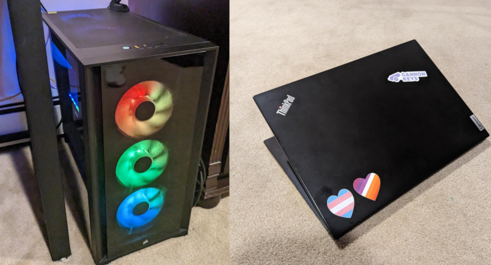

About me!
Hello there! My name is itZzenXX but if I get to know you more I'll be more than willing to allow you to use my actual name. I'm a 16 year old transfem lesbian who loves messing about with computers and other things that I hyperfixate on!
This will be completed soon TM ™

Hardware & Software that I use!
Because I'm a computer obsessed nerd I have a lot of hardware I play around with, and I have software I prfer over others. I list them all here, and I might provide reasons for that.
Hardware I use
My Laptop: It's nothing special, I use it to get by with anything portable really, it's a ThinkPad L14 situated with a Ryzen 3 Pro 4450U with its RAM upgraded to 16GB and it gets the job done. I do devlopment and school work on this thing, it can handle light gaming well too but that's not what I use this laptop for anyways. I consider this computer the "I need this thing to work and to work well" so I installed Fedora Linux on it so it does that job well. I love this laptop so much more over the ThinkPad T420 I used to daily drive, but that was mostly during my fossgirl phase :)
My Desktop: The ultimate powerhouse, enabling me to do whatever I want without any restraint. Gaming, VR, Development, you name it, it (probably) can do it. This computer is an upgrade to my previous desktop, which is now Plus St's main server! The full part list for this beast is located over here if you're curious as to what makes this computer so powerful.
Software I use
Operating System(s): I'm very much a linux snob, I've left Windows becuase of numerous reasons but most importantly I just prefer using Linux over Windows or macOS. On my desktop and Plus St's server I use arch linux, it's Fedora Linux on my laptop (however I have been considering giving Gentoo another go). On my phone I just use the Google Pixel stock OS, I am stuck on stock OS for now but I am waiting for things to fall in place before I finally switch back to GrapheneOS.
DM(s) and WM(s): I use Gnome on my laptop and Sway on my desktop, nothing special with the former but I have been getting back into window managers so I might install Sway on my laptop too.
This will also be completed soon TM ™ TM
